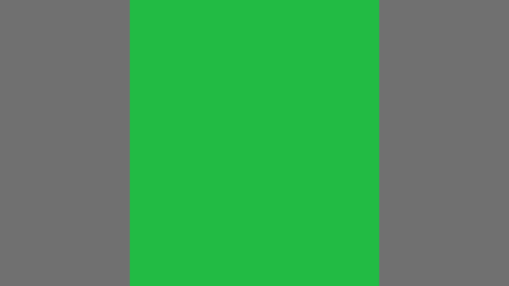
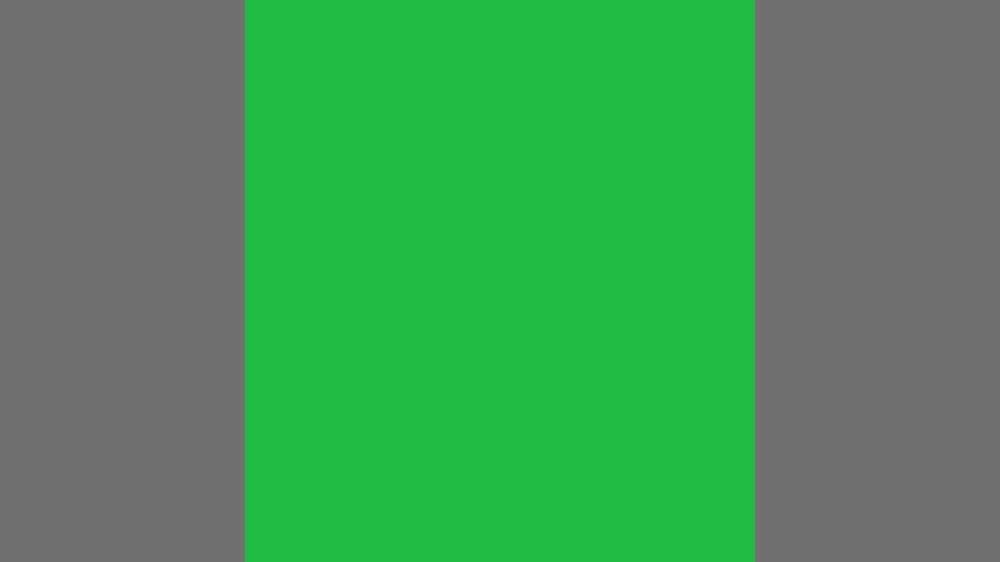

Open full-size B ↗
Open full-size D ↗Evaluation case · proportion-green-002 · shuffled revision
The same request, now with closer amounts. Every example uses the same green and gray as the vivid-green examples in the previous set.
Aim close to 40% total green; no subject is specified.
How would you rank these matches? Brief descriptions, ties and uncertainty are welcome.
Which examples feel practically interchangeable, and which differences feel substantial? If they all look similarly good or the differences are hard to see, say so.
No numeric scores are required. The examples have been shuffled; use the A–F labels shown here.

Open full-size B ↗
Open full-size D ↗